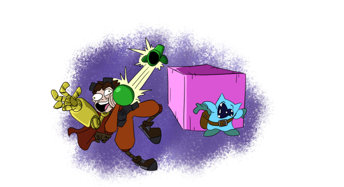

Gameplay
This game will have Dungeons and Dragons style combat, where positioning matters, attacks have range, and environmental features can interfere in a manner of ways. Instead of rolling dice for damage, most attacks and actions will be tied to “action commands”, properly following the button prompts and inputs that pops up. You can also guard incoming attacks, or dodge/counter attacks (depending on the character) if timed correctly. The player will have 2 – 3 people on the field at a time but will have more party members for back up. Combine different characters together and see how well they match up together!
Every character will have a passive ability that activates on its own, and their own class. For instance, Rocket, the main character, is a wide range bruiser. He typically does physical punches that can reach from across the map. His passive ability is a cheer for his teammates, which stops a negative mechanic from activating as long as he is on the field.
The negative mechanic in question is the hope meter, which naturally depletes over time. The idea would be that you need to focus on keeping up the spirits of your allies while in combat as you defend and attack. This meter would tie in the combat with the story focus of managing emotions and taking care of your mental health. Each character would have varrying methods of cheering others up, that can have additional benefits or downsides. This mechanic would shake up combat strategy, now needing to focus on maintaining a balance of fighting, placement, and rallying the team. When the meter is depleted, combat becomes a nightmare. Team attacks cannot be performed, enemies deal more damage than normal, and some team members may not even attack.
There is an overworld to explore that has platforming and exploration outside of combat. Each area has a wide array of characters you can talk to who have their own storys an dilemnas going on.
There would be minigames that occur at certain story moments that change up the gameplay. A runner minigame, where you charge down a set of lanes and dodge incoming obsticals, a shoot-em-up minigame, where you fly in a plane and shoot incoming enemies as you dodge their bullets, a racing minigame, where you drive around a course racing another, and a bullet hell minigame, where you only dodge specially designed bullets patterns.
Some mechanics in this game take heavy inspiration from other titles. There are plans to create a recipe list similar to the ones from Paper Mario The Thousand Year Door or Bug Fables The Everlasting Sapling, where the player can create new items through experimentation. From the same games, this title will also have an enemy discription log, low number stats (like how typical damage would be 2 instead of 20 like in other Role Playing Games like Final Fantasy), and customizable team builds (Giving the player different weapons, badges, and upgrades to choose from for each character). The emotion mechanic is based on the one from OMORI, where the characters stats are altered depending on their emotional state. The bullet hell sections are an idea from games like Deltarune and Just Shapes and Beats, where the player has to dodge a longer and more complex attack from foes.